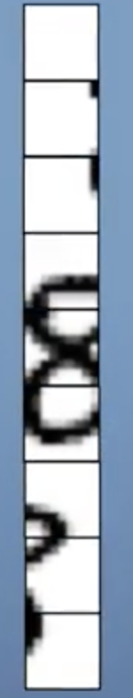
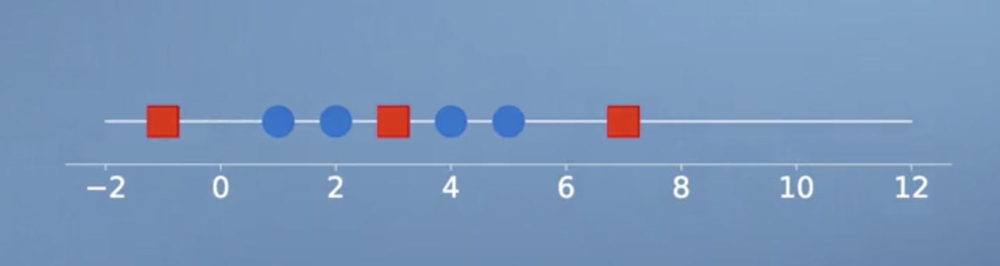
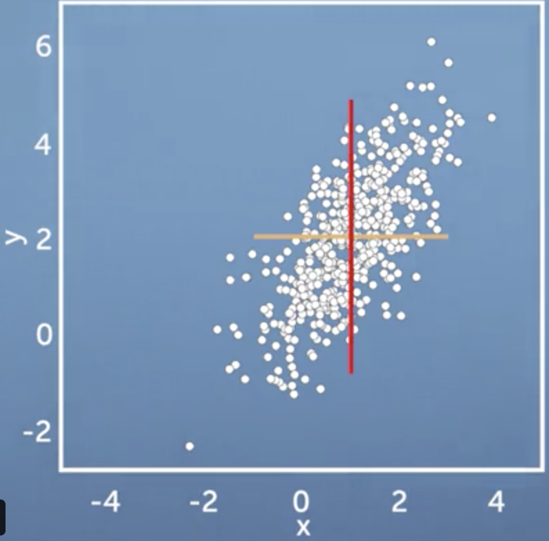
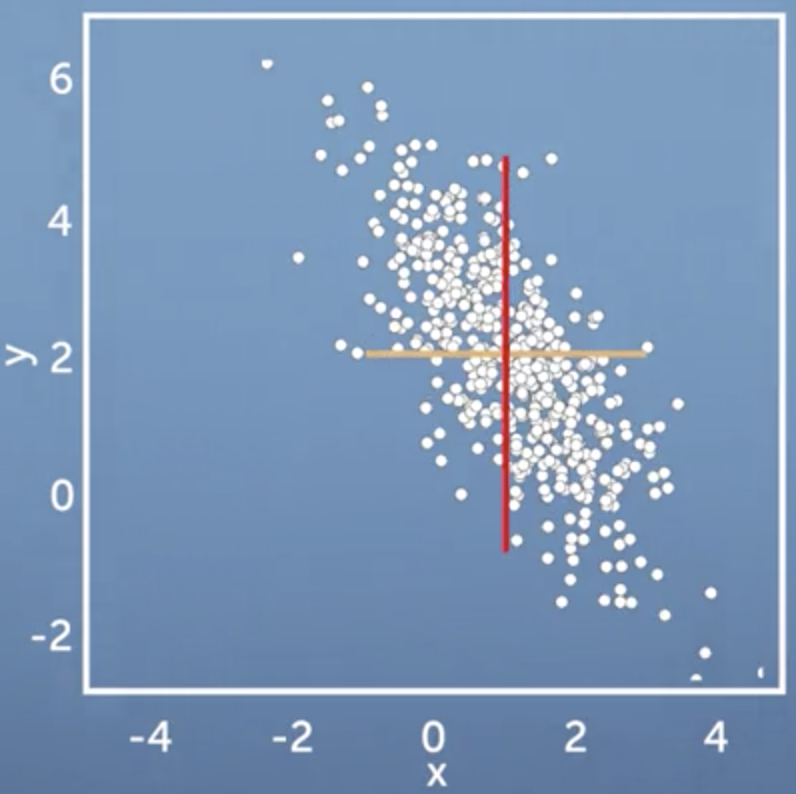

简介
Principal Component Analysis (PCA) is one of the most important dimensionality reduction algorithms in machine learning. In this course, we lay the mathematical foundations to derive and understand PCA from a geometric point of view. In this module, we learn how to summarize datasets (e.g., images) using basic statistics, such as the mean and the variance. We also look at properties of the mean and the variance when we shift or scale the original data set. We will provide mathematical intuition as well as the skills to derive the results. We will also implement our results in code (jupyter notebooks), which will allow us to practice our mathematical understand to compute averages of image data sets.
学习目标
- Compute basic statistics of data sets
- Interpret the effects of linear transformations on means and (co)variances
- Compute means/variances of linearly transformed data sets
- Write code that represents images as vectors
- Write code that computes basic statistics of datasets
Dataset
数据集简介
数据集这个概念分为好几个角度和层次，不能一概而论。
从数据处理的流程先后划分，
- 原始数据
- 清洗之后的数据
- 特征转化之后的数据- 特征向量
从数据的 modality 划分，
- text
- image
- speech
- video（hybrid）
Example1: Text Data
Raw Data
“This is a nice course in edX, I love it so much. Here is the link [URL], no thanks! Haha!” - a natural sentence.
Pre-processed Data
“a nice course edX, I love it so much. Here link, no thanks! Haha!”
预处理可能包含，
- 去除stop word
- 去除URLs
- 大小写转换
- …
Example 2: Image data
| Raw data | Transformed data |
|---|---|
|  |
图片完成了转化，从一个 $3\times 3$ 的matrix 转成 $\in \mathbb R^9$ 的向量。（NN的输入必须是向量）
无论是什么modality的数据，最终都将转化为如下形式之后送给分类器(e.g. NNs)送给分类器作为输入-特征向量- 这部分最为核心
| $X_1$ (feature 1) | $X_2$ (feature 2) | $\cdots$ | $X_n$ (feature n) | Label |
|---|---|---|---|---|
| $x_{11}$ | $x_{12}$ | $\cdots$ | $x_{1n}$ | $y_1$ |
| $x_{21}$ | $x_{22}$ | $\cdots$ | $x_{2n}$ | $y_2$ |
| $\vdots$ | $\vdots$ | $\cdots$ | $\vdots$ | $\vdots$ |
| $x_{m1}$ | $x_{m2}$ | $\cdots$ | $x_{mn}$ | $y_m$ |
上述表格中各个量含义如下：
- 上面的表可以叫做：data table; data frame; data matrix etc. 其代表数据集。（未必是数据集的原始形态）
n 代表 feature 的个数。
$X_i$: feature，我们把它建模为一个随机变量。
Data matrix 中的一行我们称为一个example，是一个 vector $\in \mathbb R^n$，其中第 $j$ 行记为：$\mathbf x_j$.
注意，通常我们把它表示为列向量，虽然其组织的形式上是“行”。实际中，根据context来决定，其本质是等价的。
树立一个观念
不同领域对数据集中各个要素的称呼不同，这里做一个简单总结。
| 数据集中的要素 | 统计学 | 机器学习 | 数据库 |
|---|---|---|---|
| 行 | instance | example | Record |
| 列 | attribute | feature | attribute |
| 整体 | Sample | data sets | Table |
各种叫法会带来一些困惑，但是我们应该树立一个观念，；
数据集中的一条数据, 在数学上是高维空间中的一个point；整个数据集就是分布在空间中的很多pointsExample：
数据集中的每个example 都有$n$ 个特征，那么个example 就是一个 vector $\in \mathbb R^n$.
概率视角
我们把数据的每个特征看作一个随机变量，则其特征集合$\lbrace X_1,X_2,…,X_n \rbrace$ 就构成了一个随机向量，记为：$\mathbf{X}$
or $\mathbf X = \lbrace X_1,X_2,…,X_n\rbrace^T$, column vector.
那么，包含$m$ 个examples 的数据集可以看作是随机向量 $\mathbf X$ 的 m 个具体取值，也同时构成了一个$\in \mathbb R^{m\times n}$ matrix，也记为：$\mathbf X$.
符号$\mathbf X$ 有时候表示随机向量$\lbrace X_1,X_2,…,X_n\rbrace$，有时候用以表示 data matrix。具体情况取决于具体的context。
*一般来讲，
- 当出现2个indexes的时候表示 data matrix, e.g. $\mathbf X_{ij}$；表示data matrix 中第$i$ 行，第$j$ 列的 entry，当然从概率视角出发，它也同时表示 “随机变量 $X_j$” 的第 $i$ 个具体取值。
- 当出现一个index 的时候表示随机向量， e.g. $\mathbf X_j$ 即为 $X_j$, 即表示第 $j$ 个
Mean Value
区别两个概念
- mean 均值，既可出现在统计的context 下，也可出现在 probability 的context下。
- expectation 期望，只能与 随机变量/向量 一起使用。也就是说，只有出现随机变量这个概念的时候，expectation 才可以使用。
$\mathcal D = \lbrace \mathbf x_1,\mathbf x_2,…,\mathbf x_m\rbrace$ 是我们的数据集，其中 $\mathbf x_i$ 是一个example，或者叫做 data point，是随机向量$\mathbf X$ 的一组具体取值。
根据上小节的知识，我们用随机向量/变量 $\mathbf X$ 代替 $\mathcal D$.
Mean value of $\mathcal D$ is defined as:
$$
\mathbb E[\mathbf X] = \frac{1}{m}\sum_{i=1}^m \mathbf x_i
$$
mean value 不一定是数据集中的一个具体的点，它只是表示数据集中所有 examples的一个平均值；从 data space 的角度看，mean 就是 分布在空间中的那些点（来自数据集）的质心。
Variances and covariances

Variance 衡量数据的分散程度，从平均意义上衡量数据集中的每个点与均值的差异的大小。
上图中所示的两组points, 拥有相同的均值，但红色point 分散一些；蓝色point集中一些。
1-D data
所谓1-D 数据 是指 “该数据只涉及一个特征 ”，也即：只有一个表示特征的随机变量记为，$X$
$X = {x_1,x_2,…,x_m}$, where $x_i \in \mathbb R$ 是随机变量$X$的 $m$ 个具体取值。
variance of $X$ is defined as follows:
$$
\begin{align}
var[X] &= \mathbb E[(X - \mathbb E[X])^2] = \mathbb E[X^2] - (\mathbb E[X])^2 \\
&=\frac{1}{m}\sum_{i=1}^m (x_i -\mu)^2 \\
& \mu = \mathbb E[X]
\end{align}
$$
Example 3：
有数据集 $\mathcal D = {1,3,6,10}$, i.e. 随机变量 $X$ 取值为：${1,3,6,10}$
$\mathbb E[X] = \frac{1}{4}(1+3+6+10) = 5$
$var[\mathcal D] = \frac{1}{4}[(1-5)^2 + (3-5)^2 + (6-5)^2 + (10-5)^2] =$
结论：
- Variance measures the average squared distance of every data point from the mean, which imply the spread of the data points.
- The less variance is, the more stable.
n-D data
Ok, 下面我们对多维数据做一个详细的描述。
假设我们现在的数据集中的每个 data point 都是多维向量: n 维.
不像之前在 Example 3 中的数据集，其中的data point 都是1-D，e.g. point1 =1,point2 = 3,point3 = 6,point 4 = 10.
那么，参考之前小节-《概率视角》的知识，并且与data matrix 的形式保持一致，我们可以将数据集写成如下形式：
$$
\begin{align}
&\mathbf X = \lbrace X_1,X_2,…,X_n\rbrace \\
&X_j = \begin{bmatrix}
x_{1j} \\
x_{2j} \\
\vdots \\
x_{mj}
\end{bmatrix}\\
&x_{kj},k\in{1,…,m} : \text{the specific values of random variable } X_j (\text{the j-th feature}).
\end{align}
$$
那么数据集亦可表示为：
$$
\begin{align}
\mathcal D&= {\mathbf x_1, \mathbf x_2,…,\mathbf x_m},\\
\mathbf x_i &= \begin{bmatrix}
x_{i1}\\
x_{i2}\\
\vdots\\
x_{in}
\end{bmatrix}
\in \mathbb R^n,
\text{ which is a specific value for random vector } \mathbf X.
\end{align}
$$
由于 data point 是$n$ 维 vector space 中的一个点 - a vector with $n$ components, 因此我们说数据集是$n$ 维数据集。
现实中的数据大多是多维的，因此我们总是使用多个特征来描述一个object, 比如人的特征：身高，体重，血型…
然而，当我们的数据point 是在n 维空间的时候，仅仅使用均值和方差来刻画数据集的特性就不足够了。体现在：即使两个多维数据集的均值和方差都相同，这两个数据集本身也可能会有极大的差异。如下图，
|  |  |
|---|---|
| Positive correlated | Negative correlated |
上面两幅图的 mean and variance 都相同，但我们可以明显地看出这两个数据集是有很大差异的。
具体来说：图一表明，随机变量(feature) $X$ and $Y$ 是正相关的，即：当 $x$ 变大， $y$ 也会变大； 图二表明，随机变量(feature) $X$ and $Y$ 是负相关的，即：当 $x$ 变大， $y$ 会变小。
这个时候我们需要新的度量标准来帮助我们刻画多维数据集的特性, 这个标准是：Covariance
**Covariances
随机变量 $X$ and $Y$ 的 covariance 定义为：
$$
\begin{align}
cov[X, Y] &= \mathbb E[(X - \mathbb E[X])(Y - \mathbb E[Y])] \\
&= \mathbb E[XY] - \mathbb E[X] \mathbb E [Y] \\
&= \mathbb E[XY] - \mu_X \mu_Y
\end{align}
$$
随机变量$X$ and $Y$ 的 covariance matrix 记为：$\Sigma_{X,Y}$， 定义为：
$$
\begin{align}
\Sigma_{X,Y}& = \begin{bmatrix}
var[X,X] & cov[X,Y] \\
cov[Y,X] & var[Y,Y]
\end{bmatrix}\\
&=\begin{bmatrix}
\sigma_{XX} & \sigma_{XY}\\
\sigma_{YX} & \sigma_{YY}
\end{bmatrix}
\in \mathbb R^{2\times 2}
\end{align}
$$
几个重要结论
covariance matrix of two random variables is a $2 \times 2$ matrix, denoted as $\Sigma_{X,Y}$.
$\Sigma_{X,Y}$ is symmetric and positive semi-definite. This conclusions could be generalized to co cariance matrix of random vector.
- $cov[X,Y]$ 的正负表示两个随机变量的相关性，
- 如果 > 0, 表明 $X$ 和 $Y$ 正相关（positively coorelated），即：$X$ 取值增大的时候，$Y$ 的取值也会变大。
- 如果< 0, 则表明 $X$ 和 $Y$ 负相关（negatively coorelated），即：$X$ 取值增大的时候，$Y$ 的取值会减小。
数据集记为: $\mathcal D =\lbrace\mathbf x_1,\mathbf x_2,…,\mathbf x_m\rbrace$, $\mathbf x_i$ 是随机向量 $\mathbf X$ 的第 $i$ 个具体取值，是个vecotr$\in \mathbb R^n$.
Random vector $\mathbf X^T = \lbrace X_1,X_2,..,X_n \rbrace$.
$\mathcal D$ 和 $\mathbf X$ 概念上是等价的，区别在于我们从不同的角度描述数据。多维数据（随机向量）的convariance也叫做 variance，是一个意思。
其 mean value 定义为：
$$
\mu_{\mathbf X} = \mathbb E[\mathbf X]=
\begin{bmatrix}
\mathbb E[X_1]\\
\mathbb E[X_2]\\
\vdots \\
\mathbb E[X_n]
\end{bmatrix}
=
\begin{bmatrix}
\mu_1\\
\mu_2\\
\vdots \\
\mu_n
\end{bmatrix}
\in \mathbb R^n.
$$
现在考虑 covariance matrix 的定义。
- 随机向量是随机变量的自然地扩展，我们先从这个思路出发，其定义如下：
$$
\begin{align}
&cov[\mathcal D] =var[\mathcal D]= cov[\mathbf X ] =var[\mathbf X] =\Sigma_\mathbf X \\\
&=\mathbb E[(\mathbf X -\mu_{\mathbf X})(\mathbf X - \mu_{\mathbf X})^T] \\
&=\mathbb E [
\begin{bmatrix}
X_1 - \mu_{X_1}\\
X_2 -\mu_{X_2}\\
\vdots \\
X_n - \mu_{X_n}
\end{bmatrix}
\begin{bmatrix}
X_1 - \mu_{X_1} & X_2 - \mu_{X_2} & \cdots & X_n - \mu_{X_n}
\end{bmatrix}
]\\
&= \mathbb E[
\begin {bmatrix}
(X_1-\mu_{X_1})^2 & (X_1-\mu_{X_1})(X_2-\mu_{X_2}) & \cdots & (X_1-\mu_{X_1})(X_n-\mu_{X_n})\\
(X_2-\mu_{X_2})(X_1-\mu_{X_1}) & (X_2-\mu_{X_2})^2 & \cdots &(X_2-\mu_{X_2})(X_n-\mu_{X_n})\\
\vdots & \vdots & \ddots & \vdots \\
(X_n-\mu_{X_n})(X_1-\mu_{X_1}) & (X_n-\mu_{X_n})(X_2-\mu_{X_2}) & \cdots &(X_n-\mu_{X_n})^2
\end{bmatrix}
]\\
&= \color{blue}{\begin{bmatrix}
\mathbb E(X_1-\mu_{X_1})^2 & \mathbb E(X_1-\mu_{X_1})(X_2-\mu_{X_2}) & \cdots & \mathbb E(X_1-\mu_{X_1})(X_n-\mu_{X_n}) \\
\mathbb E(X_2-\mu_{X_2})(X_1-\mu_{X_1}) & \mathbb E(X_2-\mu_{X_2})^2 & \cdots & \mathbb E(X_2-\mu_{X_2})^2 \\
\vdots & \vdots & \ddots & \vdots \\
\mathbb E(X_n-\mu_{X_n})(X_1-\mu_{X_1}) & \mathbb E(X_n-\mu_{X_n})(X_2-\mu_{X_2}) & \cdots & \mathbb E(X_n-\mu_{X_n})^2
\end{bmatrix}}\\
&=\color{blue}{\begin{bmatrix}
var[X_1] & cov[X_1,X_2] &\cdots &cov[X_1,X_n] \\
cov[X_2,X_1] & var[X_2] &\cdots &cov[X_2,X_n] \\
\vdots & \vdots & \ddots & \vdots \\
cov[X_n,X_1] & cov[X_n,X_2] &\cdots & var[X_n]
\end{bmatrix}} \\
&=\color{blue}{\begin{bmatrix}
\sigma_{11} & \sigma_{12} & \cdots & \sigma_{1n}\\
\sigma_{11} & \sigma_{22} & \cdots & \sigma_{2n}\\
\vdots & \vdots & \ddots & \vdots \\
\sigma_{n1} & \sigma_{n2} & \cdots & \sigma_{nn}
\end{bmatrix}}
\end{align}
$$
- 我们直接考虑variance or covariance 的含义：计算两个随机变量之间某种关联的程度。那么随机向量其本质也就是若干个随机变量的集合而已，那么当我们需要计算随机向量的variance 的时候，我们自然想到本质就是计算：该随机向量所包含的随机变量之间的covariance。很容易知道，这就像 graph 的 adjacency matrix一样，是个$n \times n$ 的矩阵。我们记为：$var[\mathbf X]$ or $cov[\mathbf X]$, ; 或者从数据集的角度为：$var[\mathcal D]$ or $cov[\mathcal D]$. 以后我们统一写为：$\Sigma_{\mathbf X}$, 简记为 $\Sigma$ , 其中：
$$
\Sigma_{ij} = cov(X_i, X_j)
$$
- 上面都是从概念上讲，现在我们给出一个便于计算的随机向量的variance/covariance 的表达式。这个表达式直接来自定义1 （公式第二行），如下：
$$
\begin{align}
\Sigma &= \mathbb E[(\mathbf X - \mathbf \mu)(\mathbf X - \mathbf \mu)^T] \\
&=\frac{1}{m}\sum_{i=1}^m (\mathbf x_i -\mu)(\mathbf x_i - \mu)^T
\end{align}
$$
很明显，3中定义式是$m$ 个matrix 相加。可以很容易证明（展开硬算），3式确实与1式等价。
注意对比这个公式与 1中公式的异同：
- 来源于定义1
- 直接按照期望定义计算
- $\mathbf x_i$ 是随机向量 $\mathbf X$ 的一组具体取值，是个 vector $\in \mathbb R^n$. 表现在 data matrix 中就是第$i$ 行。其具体形式为：
$$
\mathbf x_i = \begin{bmatrix}
X^1_i \\
X^2_i \\
\cdots \\
X^n_i
\end{bmatrix}
=
\begin{bmatrix}
\mathbf X_{i1} \\
\mathbf X_{i2} \\
\vdots \\
\mathbf X_{in}
\end{bmatrix}
$$
- $\mathbf \mu$ 是 随机向量$\mathbf X$ 的均值，即:$\mu_{\mathbf X}$，其定义为:
$$
\mathbf \mu = \begin{bmatrix}
\mu_{X_1}\\
\mu_{X_2}\\
\vdots \\
\mu_{X_n}
\end{bmatrix}\in \mathbb R^n
$$
而其中
$$
\mu _{X_j} = \frac{1}{m} \sum_{i=1}^m \mathbf X_{ij}
$$
Note！: 按照之前的分析，$\mathbf x_{ij}$ 和 $\mathbf X_{ij}$ 指的是data matrix 中同一个entry。希望读者不要给符号给混淆了。
- 另一个covariance matrix 计算式：
$$
\begin{align}
\Sigma_{\mathbf X} &= E[(\mathbf X - \mathbb E[\mathbf X])(\mathbf X - \mathbb E[\mathbf X])^T]\\
&= E[(\mathbf X - \mathbb E[\mathbf X])(\mathbf X^T- \mathbb E[\mathbf X]^T)]\\
&= E[\mathbf X \mathbf X^T- \mathbf X \mathbb E[\mathbf X]^T - \mathbb E[\mathbf X]\mathbf X^T + \mathbb E[\mathbf X ] \mathbb E[\mathbf X]^T ]\\
&= \mathbb E[\mathbf X \mathbf X^T] - \mathbb E[\mathbf X] \mathbb E[\mathbf X^T]
\end{align}
$$
Linear/Affine transformation of datasets
我们经常会对数据做一些线性变换，比如：shit, scale,rotation, etc. 这是数据处理中非常常见的操作。
那么在我们对数据做了线性变换之后，数据的某些统计特征会不会发生变化呢？比如 mean value and variance.
Effect on the Mean
提前说明
- $\mathcal D + b$ = “给数据集中每个data point (which is a vector) 都加 $\mathbf b$ ” = “data matrix 中的每个entry 都加 $b$.”
即：
$$
\begin{align}
&\mathcal D +b \text{ means } \mathcal D+\Beta = \lbrace \mathbf x_1 + \mathbf b , \mathbf x_2 + \mathbf b,\cdots,\mathbf x_m +\mathbf b \rbrace\\
&\text{where, } \Beta_{ij} = b ,\\
&\text{where, }\mathbf b = \begin{bmatrix}
b\\b\\ \vdots \\ b
\end{bmatrix}
\end{align}
$$
- $a\mathcal D$ = “给数据集中每个data point 都乘以2 ” = “给 data matrix 中的每个entry 都乘以 $a$.”
即：
$$
\begin{align}
a \mathcal D &= \mathbf A \mathcal D \\
\text{where } \mathbf A &= \begin{bmatrix}
a &0&\cdots&0 \\
0&a&\cdots&0 \\
\vdots&\vdots&\ddots&\vdots\\
0 & 0 & \cdots&a
\end{bmatrix}=diag(a).
\end{align}
$$
很多时候为了简化起见，我们很多时候直接写成：$\mathcal D +b$ 和 $a\mathcal D$ 这种形式。
Example 1: shit all the data points in the dataset, i.e. shift the dataset., same meaning.
datasets $\mathcal D =\lbrace -1,2,3 \rbrace$. $\mathcal D^\prime = \lbrace 1,4,5\rbrace = \mathcal D + 2$
数据集是1-D 数据，因此可以看做一个随机变量的取值，此随机变量记为：$X$
$\mathbb E[\mathcal D]=\frac{-1+2+3}{3}=4/3$.
$\mathbb E[\mathcal D^\prime]=\frac{1+4+5}{3}=\frac{(-1+2)+(2+2)+(3+2)}{3} = \frac{-1+2+3}{3} +\frac{2+2+2}{3} = \mathbb E[\mathcal D] + 2$
上述结论就像我们在概率论课程中学习到的一样，对随机变量$X$，我们有这个结论：$\mathbb E [X + c] = \mathbb E[X] +c$.
之所以一致，是因为就像上面讲的一样：1-D 数据集本身就可以看做一个随机变量$X$.
Example 2: scale all the data points in the dataset, i.e. stretch the dataset, same meaning.
$\mathcal D^{\prime\prime} = \lbrace -2,4,6 \rbrace = 2\mathcal D$.
$\mathbb E[\mathcal D^{\prime\prime}]= \frac{(-1)\times2 + 2\times 2 + 3\times 2}{3}=\frac{(-1+2+3)\times2}{3}=\frac{-1+2+3}{3}\times2 =2 \mathbb E[\mathcal D]$.
总结
$$
\color{blue}{\mathbb E[\alpha\mathcal D +\beta] = \alpha\mathbb E[\mathcal D] + \beta}
$$
其中, $\alpha,\beta$ 都是常数(constant number.)
Effect on Variance
Example 3 (1-D dataset): shit the dataset.
$\mathcal D = \lbrace -1,2,3 \rbrace$, $\mathcal D^\prime = \lbrace 1,4,5\rbrace = \mathcal D + 2$
现在我们计算 $\mathcal D^\prime$ 的variance：
$$
\begin{align}
&var[\mathcal D^\prime] = \mathbb E[(\mathcal D^\prime - \mu_{\mathcal D^\prime})^2]\\
\text{we have known that: } &\mathcal D^\prime = \mathcal D +2 , \mu_{\mathcal D^\prime}= \mu_{\mathcal D} +2 \\
\text{So: } &\mathcal D^\prime - \mu_{\mathcal D^\prime} = \mathcal D - \mu_{\mathcal D}\\
\Rightarrow &var[\mathcal D^\prime] =\mathbb E[(\mathcal D - \mu_{\mathcal D})^2]= var[\mathcal D]
\end{align}
$$
Example 4 (1-D dataset): scale the dataset.
$\mathcal D^{\prime\prime} = 2\mathcal D$.
$$
\begin{align}
var[\mathcal D^{\prime\prime}] &= \mathbb E[(\mathcal D^{\prime\prime} - \mu_{\mathcal D^{\prime\prime}})^2]\\
&= \mathbb E[(2\mathcal D - 2\mu_{\mathcal D})^2]\\
&= \mathbb E[2^2(\mathcal D - \mu_{\mathcal D})^2]\\
&= \mathbb 2^2E[(\mathcal D - \mu_{\mathcal D})^2]\\
&= 2^2var[\mathcal D]
\end{align}
$$
总结：
$$
\color{blue}{var[\alpha\mathcal D+\beta]= \alpha^2 var[\mathcal D]}.
$$
Effect on Covariance
Covariance 只是针对多维数据，i.e. 随机向量。
$\mathcal D = \lbrace \mathbf x_1,…,\mathbf x_m \rbrace$, where $\mathbf x_i \in \mathbb R^n$. (回忆 data matrix中的结构，$\mathbf x_i$ 对应第 $i$ 行)
$\mathcal D$ 对应随机向量 $\mathbf X$.
$\mathcal D$ 既代表dataset，又代表随机向量，具体什么含义取决于context。
结论：
$$
\begin{align}
\color{blue}{\mathbb E[\mathbf A\mathcal D + \mathbf b] = \mathbf A \mathbb E[\mathcal D]+\mathbf b} \\
\color{blue}{var[\mathbf A\mathcal D + \mathbf b] =\mathbf A var[\mathcal D]\mathbf A^T}
\end{align}
$$
我们现在证明上述结论：
一些前提结论
$$
\begin{align}
\mathbb E[\mathcal D] = \mathbf \mu = \frac{1}{m}\sum_{i=1}^m \mathbf x_i \in \mathbb R^n
\end{align}
$$
Proof 1
$$
\begin{align}
\color{blue}{\mathbb E[\mathbf A \mathcal D + \mathbf b] } &= \frac{1}{m}\sum_{i=1}^m ( \mathbf A \mathbf x_i +\mathbf b)\\
&=\frac{1}{m}\sum_{i=1}^m ( \mathbf A \mathbf x_i ) +\mathbf b \\
&=\mathbf A \frac{1}{m}\sum_{i=1}^m \mathbf x_i + \mathbf b\\
&=\color{blue}{\mathbf A \mathbb E[\mathcal D] +\mathbf b }\\
&=\color{blue}{\mathbf A \mathbf \mu + \mathbf b }
\end{align}
$$
Proof 1-1
$$
\begin{align}
\mathbb E[\mathcal D^T]& = \frac{1}{m}\sum_{i=1}^m \mathbf x_i^T\\
&=[( \frac{1}{m}\sum_{i=1}^m \mathbf x_i^T)^T]^T\\
&= (\frac{1}{m}\sum_{i=1}^m \mathbf x_i)^T\\
&= \mathbb E[\mathcal D]^T
\end{align}
$$
Proof 1-2
$$
\begin{align}
\mathbb E[\mathcal D \mathbf A ] &= \frac{1}{m}\sum_{i=1}^m \mathbf x_i\mathbf A \\
&= (\frac{1}{m}\sum_{i=1}^m \mathbf x_i)\mathbf A\\
&= \mathbb E[\mathcal D]\mathbf A
\end{align}
$$
Proof 2
$$
\begin{align}
\color{blue}{var[\mathbf A\mathcal D +\mathbf b]} &= \mathbb E[(\mathbf A\mathcal D +\mathbf b-\mathbb E[\mathbf A\mathcal D +\mathbf b])(\mathbf A\mathcal D +\mathbf b - \mathbb E[\mathbf A\mathcal D +\mathbf b])]\\
&= \mathbb E[(\mathbf A\mathcal D - \mathbf A\mu)((\mathbf A\mathcal D - \mathbf A\mu)^T]\\
&= \mathbb E[\mathbf A(\mathcal D - \mu)(\mathcal D -\mu)^T\mathbf A^T]\\
&=\mathbf A \mathbb E[(\mathcal D - \mu)(\mathcal D - \mu)^T] \mathbf A\\
&=\color{blue}{\mathbf A var[\mathcal D]\mathbf A^T}
\end{align}
$$
半正定
Covariance of a random vector is always postitive semi-definite.
Proof: Let $\mathbf X \in \mathbb R^n$ is a random vector, for any vector $a \in \mathbb R^{1\times n}$,
$$
\begin{align}
\mathbf a Var[\mathbf X] \mathbf a^T &= Var[\mathbf a \mathbf X] \text{(by the multiplication of constant matrix property.)}\\
&\ge 0 \text{(follow the fact that variance is always positive.)}
\end{align}
$$
练习
一个在线练习用以熟悉本节课所讲的概念，link.
Covariance between two linear transformation
$a,b$ 是两个常向量 $\in \mathbb R^{1\times n}$, $\mathbf X \in \mathbb R^n $ 是一个随机向量。Then, the covariance between the two linear transformations $a\mathbf X$ and $b \mathbf X$ can be expressed as a function of the covariance matrix:
$$
\color{blue}{cov[\mathbf a\mathbf X, \mathbf b\mathbf X] = \mathbf a Var[\mathbf X]\mathbf b^T}
$$
Proof：
$$
\begin{align}
cov[\mathbf a\mathbf X, \mathbf b\mathbf X] &= \color{blue}{\mathbb E[ (\mathbf a \mathbf X - \mathbb E[\mathbf a \mathbf X]) (\mathbf b \mathbf X - \mathbb E[\mathbf b \mathbf X]) ] } \text{(by definition of covariance.)} \\
&= \mathbb E[\mathbf a(\mathbf X - \mathbb E[\mathbf X]) \mathbf b(\mathbf X - \mathbb E[\mathbf X]) ]\\
&= \mathbb E[\mathbf a(\mathbf X - \mathbb E[\mathbf X]) (\mathbf b(\mathbf X - \mathbb E[\mathbf X]))^T ] \text{(transpose of a scalar is equal to itself.)}\\
&= \mathbb E[\mathbf a(\mathbf X - \mathbb E[\mathbf X]) (\mathbf X - \mathbb E[\mathbf X])^T\mathbf b^T ]\\
&=\mathbf a \mathbb E[(\mathbf X - \mathbb E[\mathbf X]) (\mathbf X - \mathbb E[\mathbf X])^T]\mathbf b^T \text{(by the linearity of expection.)}\\
&= \color{blue}{ \mathbf a Var[\mathbf X]\mathbf b^T}
\end{align}
$$
一句话总结
Shit the dataset: 改变mean value, 不改变 variance
Scale the dataset: 两者都改变。